Sex Temples
Sex Temples is a collaboration between garima thakur & Tabitha Nikolai.
Sex Temples: Remains of our Refuse is a simulated physical and digital ceremonial space
designed to activate all five senses. It explores our early memories of sexuality & gender
through the lens of cultural, historical, and personal hybridity. Like relics in a
reliquary the physical space hosts video game stations in a larger installation, drawing
influence from both the Khujuraho monuments in Madhaya Pradesh (commonly known as Sex
Temples) and banal sites of suburban American youth culture. Each digital vignette within
the game illustrates a dreamy recollection from our youths, both mundane and traumatic,
and the formatively repressive dimensions that lie therein. The narratives told in the
architecture of the Sex Temples convey multitudinous forms of gender identity, which,
although ancient, are more progressive than many contemporary attitudes about gender and
sex. Amidst the mounting pervasiveness of digital spaces, a recursion can be glimpsed and
ways of living described in the Vedas take on heightened significance.
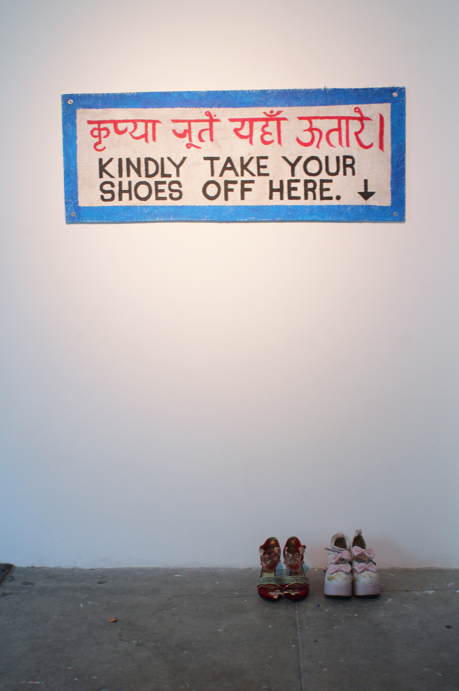
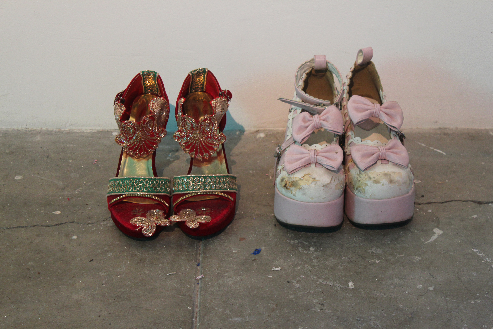
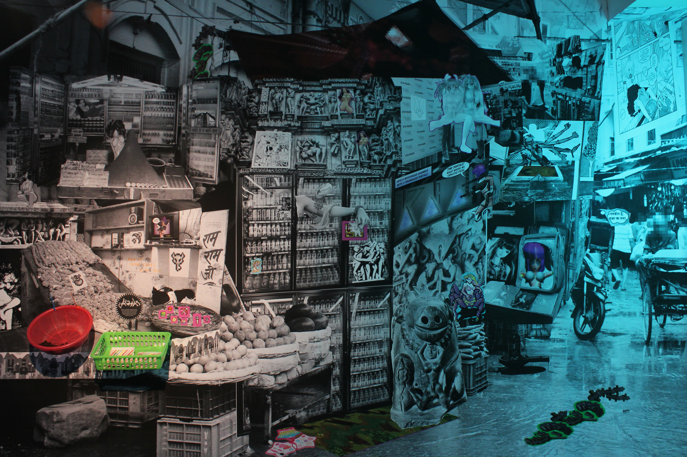
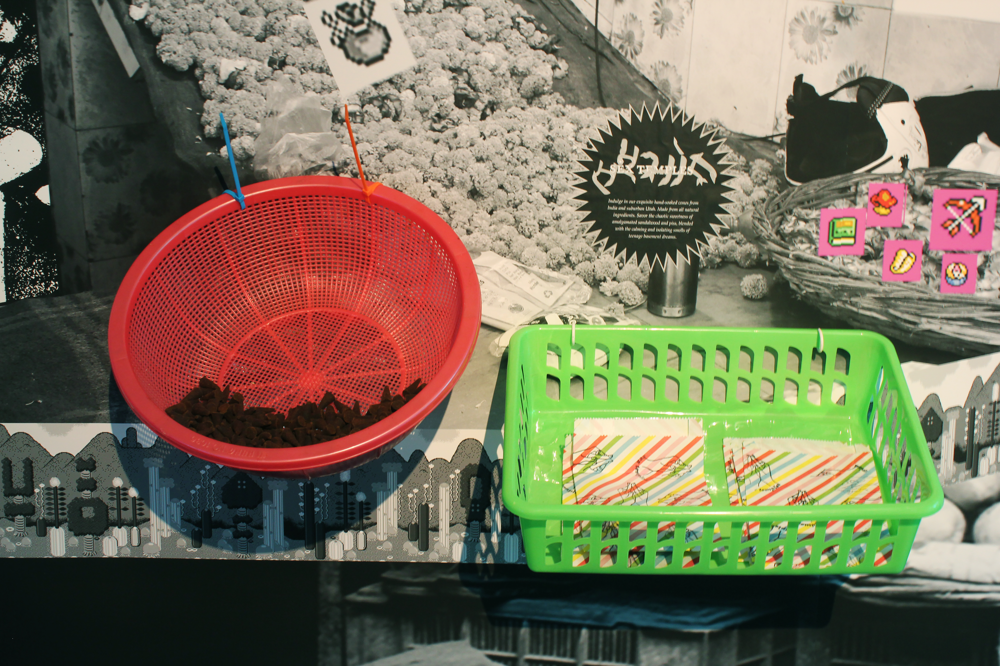
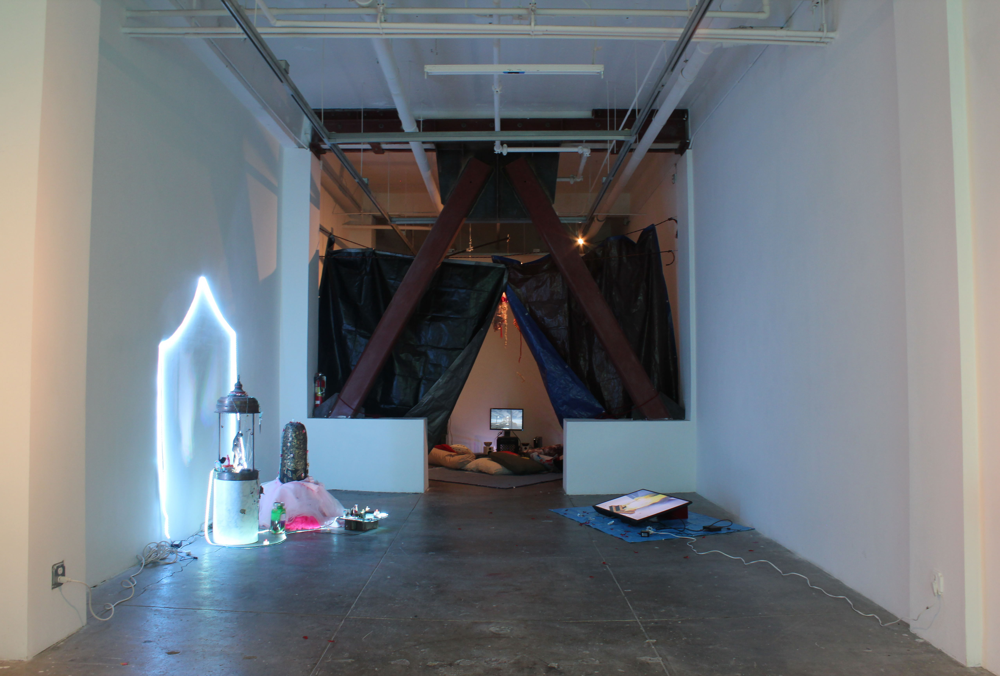
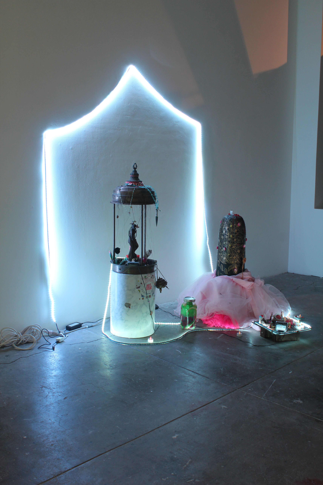
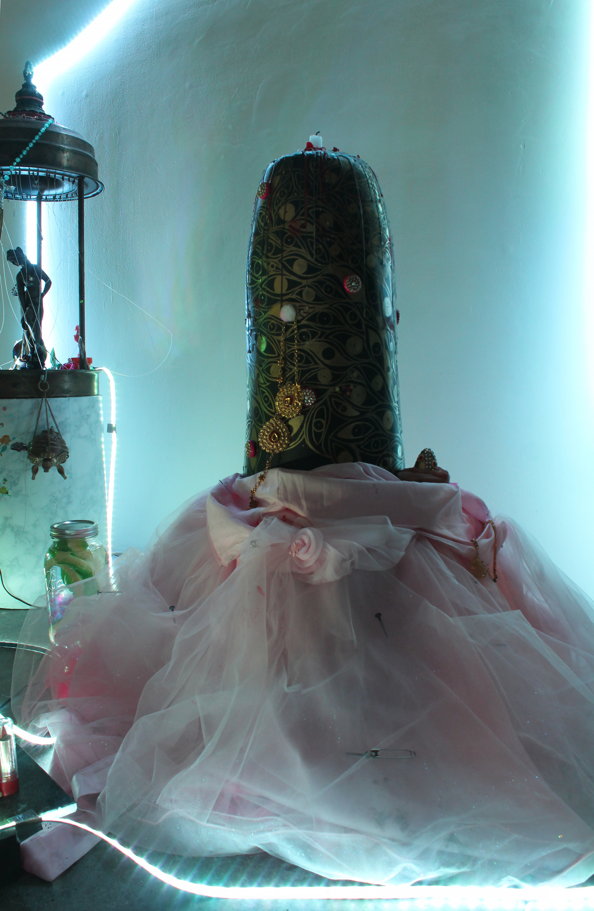
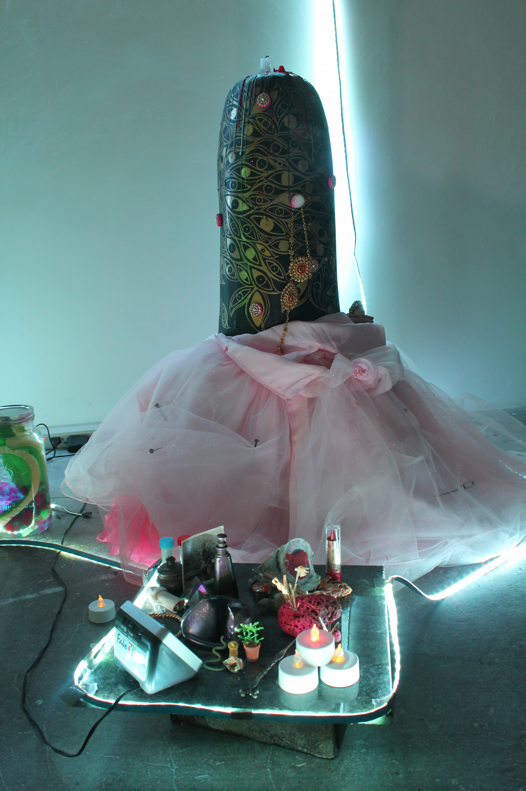
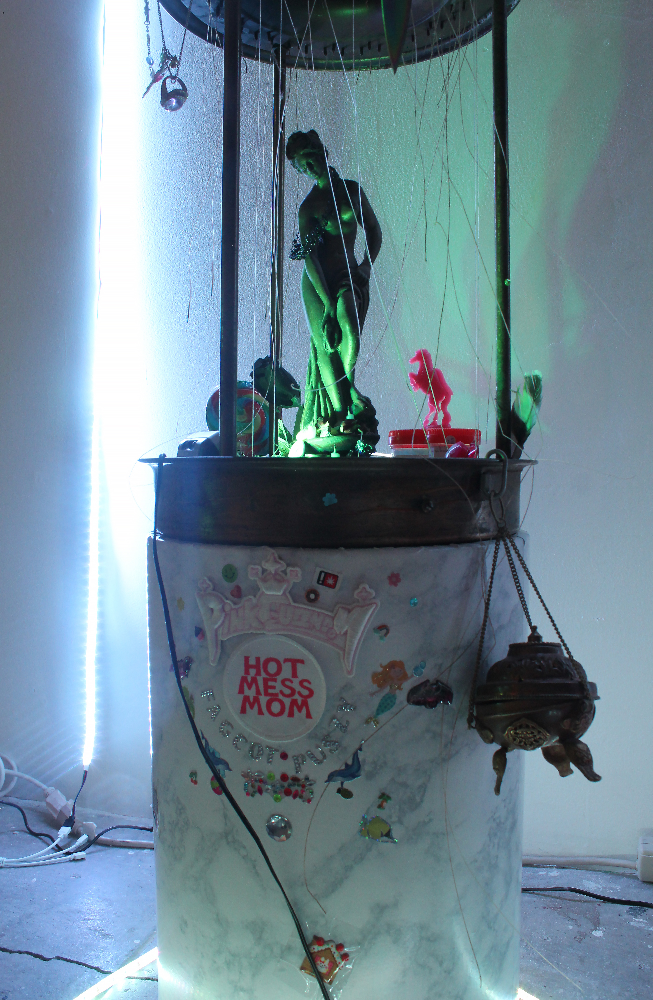
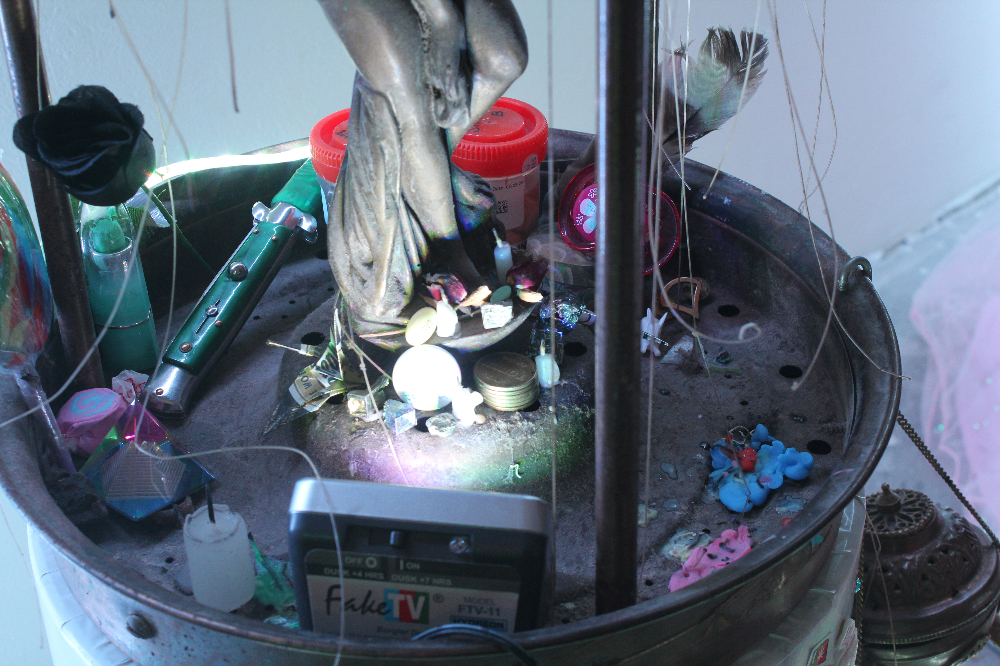
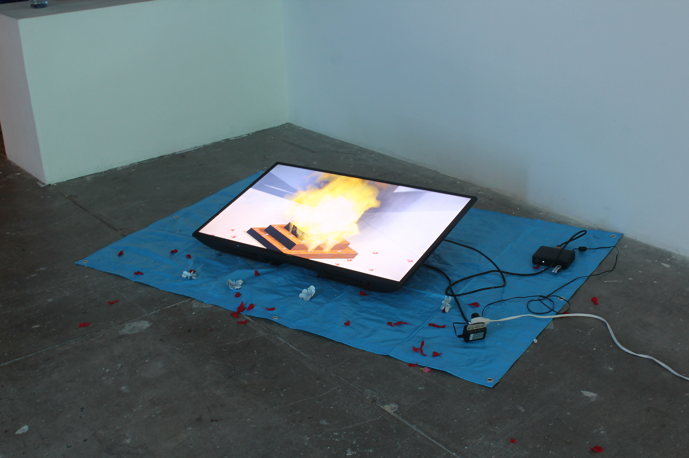
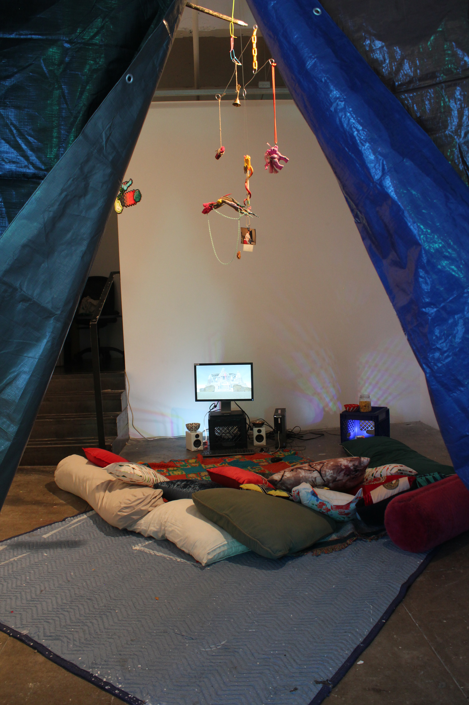
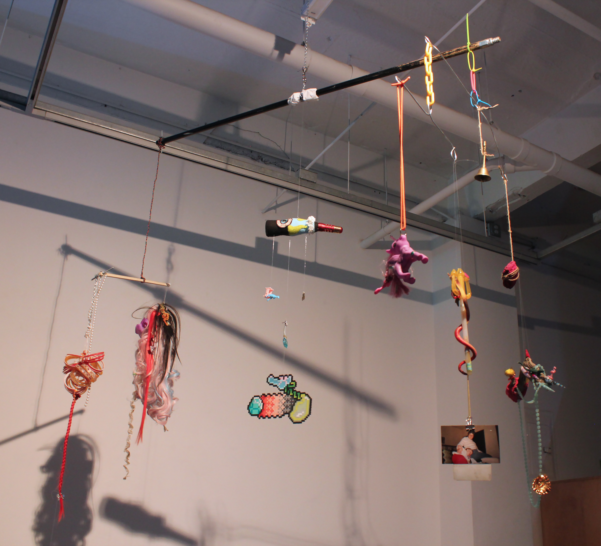
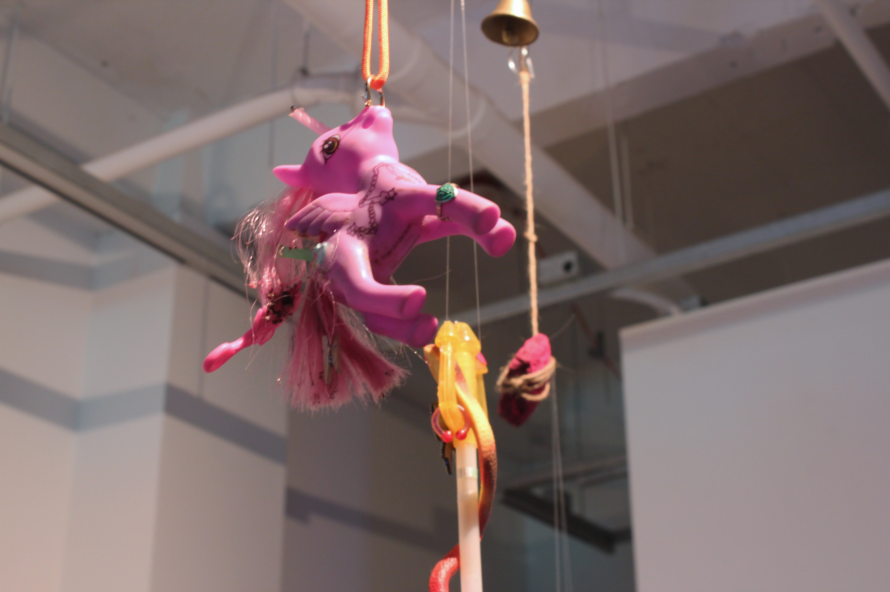
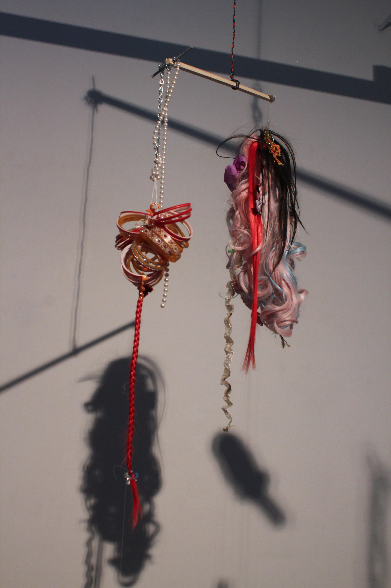